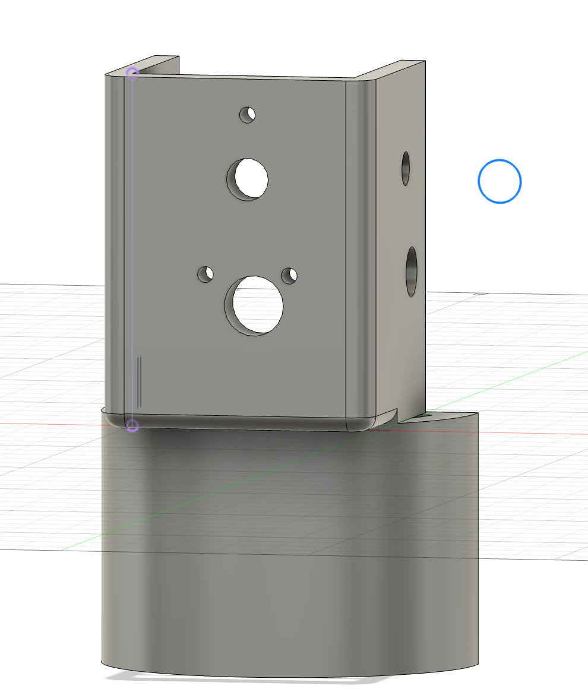
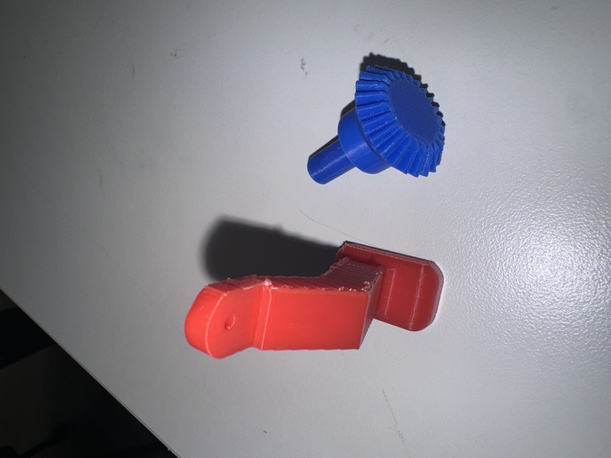

<div class="textcontainer">
<p class="margin"> </p>
<h3>Week 7: Electronic Outputs</h3>
<h4>Assignment: Minimum Viable Product for Final Project</h4>
For this assignment, I had difficulties figuring out what my project was going to look like since it relied heavily on 3D prints and the 3 first I didn't get them right with dimensions and how connected everything was going to be. By the time of the presentation, I didn't have anything put together. I used it as a time to collect ideas and guidance from experienced and fellow PS70 enthusiasts to where I should start from and what ideas were working best from what I had sketched.
The model I was going for was as follows:
<p></p>
As shown on the picture above, the idea was that the robot had to stand on the lower part. The upper part could have a DC motor attached at the front, a gear at the front, and two at the sides. Each gear at the side was to control an individual arm and finally allow opposing motions for the hands. The hands were to move just up and down while the legs moved left and right. The main issue I ran into was getting the gears to mesh properly when it came to moving hands. The plan was to use 3D printed bevel gears. They turned out to be very movement and distance specific. That is to say, the distances between teeth needed to be minimal and there was no room for changes in distances or any loose fit since those affected the meshing. The legs could attach ok, I just hadn't figure out what would activate their movement. From MVP week, I was able to get guidance and ideas that saved my dancing robot, and I moved on from a robot with complex gear mechanisms to a simple dummy robot.
<br>
A few important lessons learned:
<ul>
<li>Start one mechanism at a time.</li>
<li>When doing a project with 3D prints, start with faster prototyping (lasercut/cardboard) to figure out dimensions or what can potentially work</li>
<li>It is helpful to start small or looking at ideas that exist out in the world than just think everything from scratch</li>
<l1>Figure out mechanisms that are core to the project and start with those (I was caring most about the coding part since I assumed they'd be harder for me...but if the code works and there is no robot then it's almost pointless)</l1>
</ul>
Here are the only redeemed prints from MVP week:
<p></p>
</div>